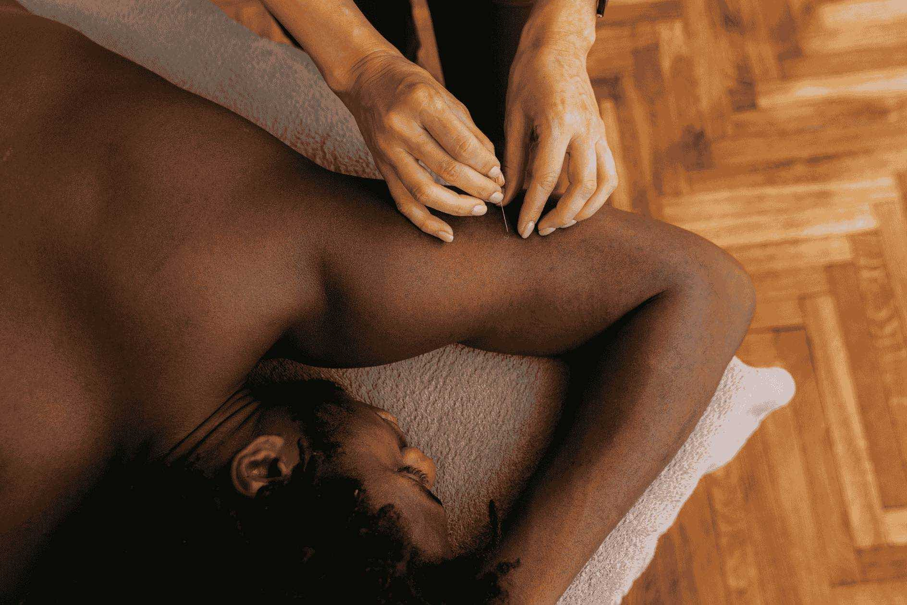

Acupuncture at The Durand Clinic alleviates pain and treats a wide range of physical, mental, and emotional conditions — through both Traditional Chinese Medicine and anatomy-based approaches.
Book an Appointment →Acupuncture addresses a broad spectrum of conditions — from chronic pain and stress to hormonal imbalances, digestive issues, and more.
We offer two evidence-informed acupuncture approaches at The Durand Clinic, delivered by regulated practitioners.
Provided by Registered Acupuncturists (R.Ac) regulated by the CTCMPAO. Thin needles are inserted into meridian points to harmonize and replenish the flow of Qi and blood, using hand manipulation or electroacupuncture.
Offered by registered massage therapists, chiropractors, and physiotherapists. This approach targets muscle trigger points and pain sites with gentle stimulation to release tension and restore function.

Thin, sterile needles are inserted into specific points on the body. You may experience a slight tingling or mild pressure that typically subsides within minutes. Your practitioner will adjust the treatment based on your individual comfort throughout the session.
Sessions conclude with needle removal and a brief recovery period, leaving most clients feeling relaxed and restored.
Our practitioners are regulated acupuncturists and allied health professionals with advanced training in both TCM and anatomy-based acupuncture. Accepting new patients.